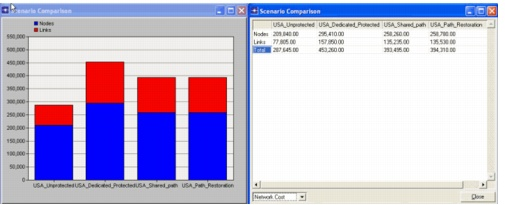
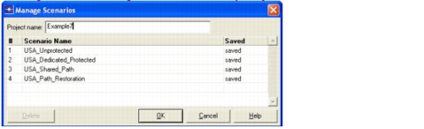

Scenarios
Scenarios
A single project can contain multiple scenarios. Each scenario contains a separate network. The basic operations to manage scenarios are accessible in the Scenarios menu:
- New scenario: creates a new `empty' scenario.
- Duplicate scenario: creates a copy of the current scenario within the same project.
- Manage scenarios: lets you rename, delete, reorder, create and duplicate scenarios.
- Compare scenarios: allows you to compare various network metrics across the different scenarios in the current project. The metrics displayed per scenario are: total cost, node cost, link cost, and topology information for the different layers (capacity, utilization, etc.). The comparison is shown in both tabular and graphical format.
- Previous scenario: switches to the previous scenario in the present project.
- Next scenario: switches to the next scenario in the present project.
- Switch to scenario: select the scenario to display.
- Scenario components >Import/Export: allows you to import/export a scenario. This is useful to exchange scenarios among projects. In both dialogs, only the Network Model option is relevant to SP Guru Transport Planner.
Procedure 2-1 Comparing Scenarios
- Open the WDMGuru_Tutorial_Scenarios project.
- Select File > Open....
- Select the WDMGuru_Tutorial_Scenarios project, then press Open.
This project contains four scenarios for an example U.S. network. Each scenario contains a design of the OCH layer for the traffic matrix called OC-48. Each of these scenarios uses a different protection strategy. The initially loaded scenario is called USA_Unprotected.
- Explore the scenarios.
- Compare the scenarios.
- Select Scenarios > Compare Scenarios to compare the different scenarios in the current project. The comparison results are shown both in tabular and graphical format. These results enable you to compare how different protection strategies apply to network cost and network capacity.
- Select the category of interest in the bottom left of the tabular Scenario Comparison dialog box, then choose a specific row that contains the metric of interest to see the graph update automatically.
- Close the dialog boxes.

- Close the project.
End of Procedure 2-1
The following procedure describes how to export an existing scenario for a project, import it as a new scenario component, and then duplicate and modify the scenario a number of times. With this procedure, you will learn how to create a project with multiple scenario components based on the same underlying network for comparison testing.
Procedure 2-2 Creating Multiple Scenarios
- Open the WDMGuru_Examples project.
- Select File > Open...
- Select the WDMGuru_Examples project, then press Open.
The example project, which contains various scenarios, is loaded.
The Australia scenario appears in the workspace.
- Select Scenarios > Switch To Scenario > USA to switch to the USA scenario.
- Export the USA scenario.
- Select Scenarios > Scenario Components > Export...
The Export dialog box appears.
- Enter USA_example as the model name, then press OK.
- Close the WDMGuru_Examples project.
- Create a new project.
- Select File > New..., then choose OK in the New dialog box.
- Specify Example7 as the project name in the Enter Name dialog box, then press OK.
The Create a New Network dialog box appears.
- Choose SONET as the naming scheme of the bit rates, km as distance unit, and Logical in the View category. SONET and SDH are the US and European standards used in today's transport networks. In logical view no background map is displayed.
- Click OK.
- Import the USA_example scenario.
- Select Scenarios > Scenario Components > Import..., choose USA_example for the network model in the Import dialog box, then press OK.
The USA_example scenario is imported into the Example7 project. (Note that it is named scenario1.)
- Create new scenarios.
- Use Scenarios > Duplicate Scenario... to duplicate scenario1. Use the default name for the new scenario. (You will change the scenario names in step 8).
- Do this action three times. Now, the Example7 project contains four (identical) scenarios.
- Change the scenario names.
- Select the Scenarios > Manage Scenarios... dialog box.
- In the dialog box, change the name of the scenarios by editing the names in the Scenario Name column. Label the scenarios as follows:
- Press OK to close the dialog and save the new scenario names.

- Design the scenarios for different protection strategies.
- Use Scenarios > Switch To Scenario to switch between the scenarios.
- Use the Design > Dimension DCL/OCH Layer... dialog box to design the OCH layer for a different protection strategy in each scenario, as follows:
- unprotected
- 1+1 protected
- shared path
- path restoration
Select the OC-48 traffic matrix in the Dimension OCH/DCL Layer dialog box. Choose the appropriate protection strategy and click the Dimension button. The Results of Dimensioning dialog box appears. Choose Close in this dialog box. For more information on the dimensioning operation, please consult Network Design Operations.
- Save and close the project.
End of Procedure 2-2
| Home © 1987-2007 OPNET Technologies, Inc. All Rights Reserved. This software may be covered by one or more U.S. Patents. See complete patent notice in the Legal Notices section. OPNET Support Center |